Exact Simulations for the Bayesian Posterior of the Tobit Regression
Example uses the women's wage dataset from T. A. Mroz, Econometrica: Journal of the Econometric Society Vol. 55, No. 4 (Jul., 1987), pp. 765-799
The response variables 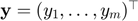 in the Tobit model is modelled via:
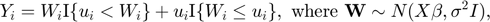
where 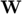 are hidden or latent variables; 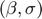 are the model parameters; and 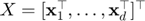 is the matrix with predictors. We wish to sample from the Bayesian posterior with priors: 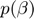 proportional to 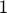, and 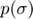 proportional to 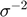. This gives the posterior:
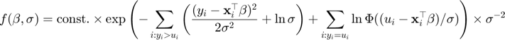
An appropriate coordinate tranformation, 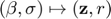, shows that simulating from the above posterior is equivelent to simulating from the truncated pdf:
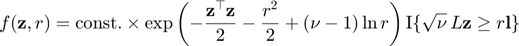
for some lower triangular matrix 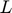 and threshold vector 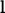. In fact, the distribution of 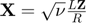 is the multivariate student 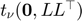 truncated to 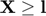. We can thus use tregress.m to perform this simulation.
Wage=csvread('private\WomenWage.csv',1,0); % load data Y = Wage(:,1); m=length(Y); % response and design matrix X = [ones(m,1),Wage(:,2:end)]; [m, d] = size(X); % dimensions of problem Yl=Y(Y==0);Yu=Y(Y>0);Xl=X(Y==0,:); Xu=X(Y>0,:); ml=length(Yl);Inv=inv(Xu'*Xu);Sig=eye(ml)+Xl*Inv*Xl'; s=Yu'*(eye(m-ml)-Xu*Inv*Xu')*Yu; % least squares residuals s=sqrt(s); nu=m-d-ml+1; % degrees of freedom wh=Xl*Inv*Xu'*Yu; % w hat l=sqrt(nu)*wh/s; % upper threshold for censoring is zero
Simulate 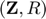 from a truncated student-type distribution:
n=10^4; [Z,R]=tregress(l,Inf(size(wh)),Sig,nu,n);
Reverse the mapping to obtain samples from the posterior of 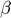:
sig=s./R; % posterior distr. of sigma C=inv(Xu'*Xu+Xl'*Xl);L=chol(C,'lower'); beta=nan(d,n); for k=1:n W=wh-sig(k)*Z(:,k); % auxiliary variables beta(:,k)=C*(Xu'*Yu+Xl'*W)+sig(k)*L*randn(d,1); end
Boxplot the marginal distributions of the posterior to assess statistical significance.
boxplot(beta(2:d,:)','labels', ... {'kidslt6','kidsge6','age','educ','exper','nwifeinc','expersq'}), box off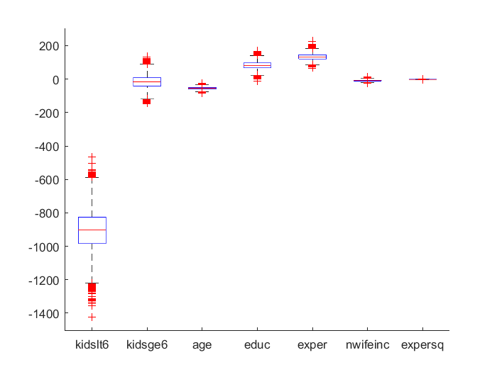
Plot marginal means and standard deviations
[mean(beta,2),prctile(beta,2.5,2),prctile(beta,97.5,2),std(beta,[],2)]
ans =
1.0e+03 *
0.9565 0.0429 1.8139 0.4525
-0.9059 -1.1441 -0.6836 0.1176
-0.0160 -0.0934 0.0606 0.0390
-0.0549 -0.0703 -0.0402 0.0077
0.0819 0.0392 0.1274 0.0224
0.1331 0.0976 0.1696 0.0183
-0.0090 -0.0181 -0.0001 0.0046
-0.0019 -0.0030 -0.0008 0.0006
Reference: Z. I. Botev and P. L'Ecuyer (2015), Efficient probability estimation and simulation of the truncated multivariate student-t distribution, Proceedings of the 2015 Winter Simulation Conference, pages 380-391, (L. Yilmaz, W. Chan, I. Moon, T. Roeder, C. Macal, and M. Rossetti, eds.)